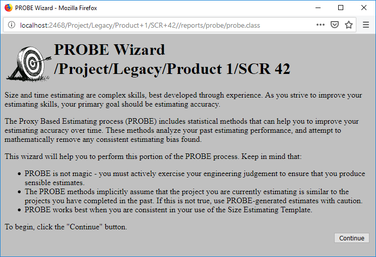
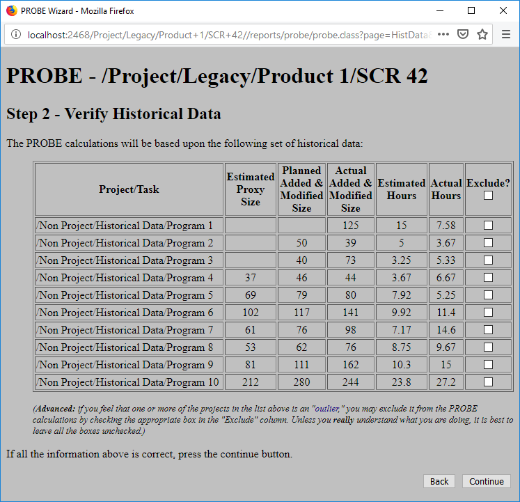
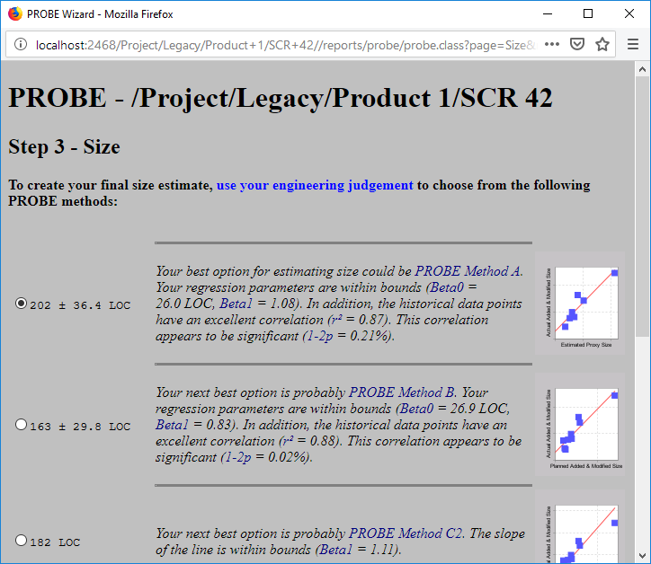
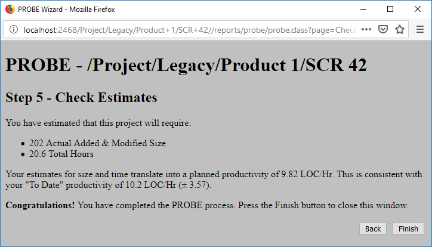
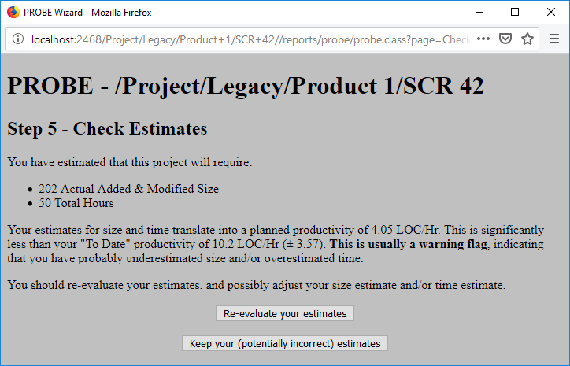

Using the PROBE Wizard Using the PROBE Wizard
Using the PROBE Wizard Using the PROBE WizardThe PROBE process is described in the PSP book A Self-Improvement Process for Software Engineers, but it can be complicated to follow. Even when the calculations are performed for you (for example, by the PROBE Tool), there are many cross-checks you must perform to verify the validity of the estimates. For individual who do not thoroughly understand the calculations being performed, it is easy to make a mistake.
The PROBE Wizard recognizes and reduces this complexity by automating as much of the process as possible. The PROBE Wizard can be opened by clicking on the link found on the Size Estimating Template.
When the PROBE Wizard is activated, it starts with a welcoming screen that reminds you of the nature of estimating with the PROBE method.

Step 1 in the PROBE method is to verify that the Estimated Proxy Size is accurate. The Wizard shows you the number you have input on the Size Estimating Template and asks you to verify that this is indeed a good estimate.
Step 2 is to verify your historical data. The PROBE Wizard puts up a table of numbers that shows your estimations from previous PSP projects.

On this pane, you can exclude data points that you know to be "outliers" statistically. By clicking on the checkboxes at the end of each row, you can exclude any data point that you know does not represent your normal work processes. If you are not completely sure about the consequences of excluding outlier data, you should probably leave all of the boxes unchecked.
Step 3 is to estimate the size of the new development effort. The PROBE method (as implemented by the Process Dashboard) outlines 5 ways to estimate size:
| A | Estimate size based on a good correlation between previous Estimated Proxy Size data and Actual Added & Modified Size data. This method is the most preferred method, but can only be used if you have sufficient data that correlates well. |
| B | If Proxy Size estimates do not correlate well enough to use method A, PROBE suggests estimating size based on a good correlation between previous Planned Added & Modified Size data and Actual Added & Modified Size data. Again, this method can only be used if you have sufficient data that correlates well. |
| C1 | If neither of the data pairings for methods A and B correlate, but you do have Estimated Proxy Size data, you can use that data to do the estimate. This method requires at least some Estimated Proxy Size data be recorded. |
| C2 | If you do not have any Estimated Proxy Size, but you do have Planned Added & Modified Size data, you can use that data to do the estimate. This method requires at least some Planned Added & Modified Size data be recorded. |
| D | If you have no historical data, method D just indicates that you should use your best engineering judgement to make the estimate. |
The Wizard will present all of these possibilities to you in decreasing order of preference based on how well each method seems to track (or correlates) with your historical data. You just have to choose the method you would like to follow by picking from a set of radio boxes.

The Wizard also has links to explanatory help windows that will pop up and give you more detail about the different types of calculations that it is doing to generate the different estimates. These links are shown in blue text.
Step 4 is very similar to step 3, except the estimation is for time instead of size. The same basic set of methods is available, and the Wizard will offer each data estimate in decreasing order of preference.
The PROBE method (as implemented by the Process Dashboard) outlines 6 ways to estimate time:
| A | Estimate time based on a good correlation between previous Estimated Proxy Size data and Actual time data. This method is the most preferred method, but can only be used if you have sufficient data that correlates well. |
| B | If Proxy Size estimates do not correlate well enough to use method A, PROBE suggests estimating time based on a good correlation between previous Planned Added & Modified Size data and Actual time data. Again, this method can only be used if you have sufficient data that correlates well. |
| C1 | If neither of the data pairings for methods A and B correlate, but you do have Estimated Proxy Size data, you can use that data to do the estimate. This method requires at least some Estimated Proxy Size data be recorded. |
| C2 | If you do not have any Estimated Proxy Size, but you do have Planned Added & Modified Size data, you can use that data to do the estimate. This method requires at least some Planned Added & Modified Size data be recorded. |
| C3 | If you only have Actual Time and Size data, you can use that data to do the estimate. |
| D | If you have no historical data, method D just indicates that you should use your best engineering judgement to make the estimate. |
Unlike other wizards you may have used in the past, the PROBE Wizard updates the data in the dashboard whenever you click the Continue button to move onward (that is why there is no Cancel button on the Wizard). If you make a mistake while using the Wizard, you'll have to use the Back button to go back and fix it, or make the change manually on the Size Estimating Template. Of course, you can always just run the PROBE Wizard a second time.
At this point, you are finished making your estimates. Step 5 encourages you to check the estimates to make sure that they make sense.

Clicking Finish dismisses the PROBE Wizard.
After you use various PROBE methods to independently generate your size estimate and your time estimate, it is always a good idea to "sanity check" those estimates to ensure that they are reasonable and in synch with each other. The final screen of the PROBE Wizard helps with this task. It uses your size and time estimates to calculate your planned productivity, and then compares this number with your historical productivity to date. When your planned productivity is significantly different than your historical productivity, it is usually a warning flag indicating that either your size estimate or your time estimate (or possibly both) is incorrect. When this occurs, the PROBE wizard strongly encourages you to reexamine your estimates.

If you rexamine your estimates and decide not to change them, you can close the PROBE Wizard by clicking on the second button.